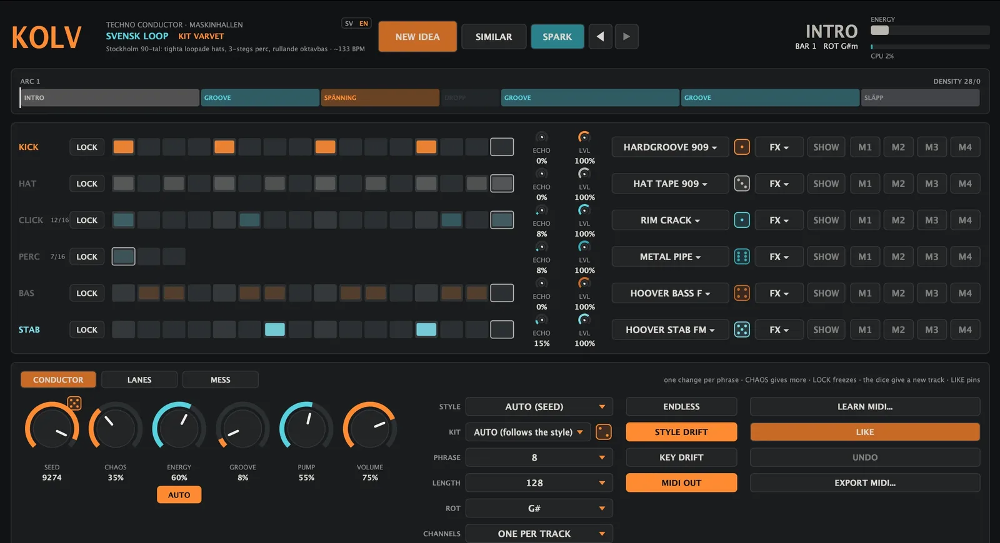

KOLVThe techno conductor that builds the track while it plays.
KOLV doesn't play a loop. It writes a whole techno track in real time: kick, hats, clicks, percussion, bass and stabs, shaped into an arc with an intro, groove, tension, drop and release. The beat stumbles, mutates and grows for hours without repeating, and it always lands on the one.
All 235 sounds and 44 kits from BETONG are built in, so KOLV sounds right the moment you press play. Every label in KOLV can be shown in Swedish or English with the SV | EN button. This manual uses the English names, with the Swedish one in grey where it helps.

01Quick start: music in 60 seconds
- Load KOLV on an instrument track in your DAW (it's an instrument, not an effect). Or open the standalone app.
- Press play in your DAW. KOLV follows your tempo and position to the sample. In the standalone app, press PLAY and set TEMPO.
- Press NEW IDEA until something grabs you. Each press gives a new seed, style, kit and key.
- Like the style but not the pattern? Press SIMILAR. Went too far? ◀ goes back, ▶ forward. KOLV remembers your last 64 ideas.
- Ride it live: turn CHAOS for more mutation, switch off AUTO and ride ENERGY yourself, and hit SPARK for a surprise.
02Install
Unzip the file you downloaded. Don't use GitHub's green "Code" button, that's only the source code.
Mac
Pick the zip for your Mac: M1–M4 (Apple Silicon) or Intel. Unzip, open Terminal and run:
bash ~/Downloads/KOLV/installera.command
For the demo: bash ~/Downloads/KOLV-DEMO/installera.command. It copies the VST3 and AU and removes macOS's block on unsigned plugins. macOS 11 Big Sur or newer.
Windows
Right-click the zip and choose Extract all. Double-click installera.bat and say yes to the admin prompt. KOLV.vst3 lands in C:\Program Files\Common Files\VST3. The .exe is the standalone app.
Linux
Unzip and run:
bash KOLV/installera-linux.sh
VST3 goes to ~/.vst3, LV2 to ~/.lv2.
Then restart your DAW or rescan plugins (in Bitwig: Settings › Locations › Plug-ins › Rescan) and search for KOLV. The demo installs as KOLV-DEMO and can sit next to the full version.
03The screen
Header
The KOLV logo (click it for the story of the Docklands boatyard), the current style and kit, the idea buttons, the phase you're in (INTRO, GROOVE ...), bar number, key, the energy meter and CPU.
The arc
The bar under the header shows the whole track: every section, how long it is and where you are. DENSITY at the right shows how many hits the current phrase is allowed.
Six tracks
KICK, HAT, CLICK, PERC, BAS, STAB. Each has LOCK, a step grid (bright = playing now, dim = resting), ECHO send, LVL, the sound button, a dice, FX, SHOW and M1–M4.
Three tabs
CONDUCTOR runs the track. LANES holds eight euclidean modulators. MESS (STÖK) has crush, skew and the dub echo.
A small number next to a track name, like 7/16, means that track is running a different length from the others. That's polyrhythm, and it's on purpose.
04The arc & energy
KOLV arranges like a DJ plays. Every track is an arc built from five kinds of sections:
| Section | Energy | What happens |
|---|---|---|
| INTRO | 15 → 50 % | Starts with kick and stab, the rest come in one by one. Only in the first arc. |
| GROOVE | about 60 % | Everything plays, the energy breathes gently. The main body of the track. |
| SPÄNNING tension | 60 → 98 % | Builds hard. Percussion always joins, filters open. |
| DROPP drop | 34 % | 4 or 8 bars without kick and bass. Then GROOVE slams back. |
| SLÄPP release | 60 → 20 % | The track winds down. |
Each track joins when the energy passes its threshold:
| Track | Plays from energy |
|---|---|
| STAB | always |
| KICK | 12 % (silent in DROPP) |
| CLICK | 20 % |
| HAT | 28 % |
| BAS | 36 % (silent in DROPP) |
| PERC | 55 %, or always in SPÄNNING |
ENERGY AUTO on: the arc drives the energy. AUTO off: the ENERGY knob drives it, live. That's the most powerful performance control in KOLV: pull it down to strip the track back to kick and stab, push it up to bring everything in.
05Conductor tab: every control
| Control | What it does |
|---|---|
| SEED + dice | The track's DNA. Same seed and style always gives the same track, at the same bar. The dice gives a new seed. |
| CHAOS KAOS | How many and how big the mutations are per phrase, and how fast the timbre wanders. 20–40 % is hypnotic, 70 %+ is restless. |
| ENERGY + AUTO | See the arc. AUTO on: the arc decides. Off: you decide. |
| GROOVE SVÄNG | Swing on the odd 16ths. Never on the kick. |
| PUMP | Built-in sidechain: the kick pushes everything else down. |
| VOLUME | Master level with soft saturation. |
| STYLE | The rhythm grammar the conductor follows. AUTO lets the seed choose. See the 16 styles. |
| KIT + dice | Which BETONG kit plays. AUTO picks one that fits the style and changes it when the style drifts. |
| PHRASE | Bars between mutations: 4, 8, 16 or 32. One change per phrase is what makes it hypnotic. |
| LENGTH | Bars per arc: 64, 128, 192, 256 or 512. |
| ROT | Root key. Or play a key into KOLV from your MIDI keyboard and everything moves there. |
| CHANNELS | For MIDI OUT. See MIDI. |
| ENDLESS, STYLE DRIFT, KEY DRIFT | See ENDLESS mode. |
| LOCK per track | Freezes that track: no mutations, no timbre drift. Lock the kick and bass you love, let the rest evolve. |
| LVL / ECHO per track | Level (drag to zero to mute) and how much goes to the dub echo. |
06Ideas: NEW IDEA, SIMILAR, SPARK
NEW IDEA NY IDÉ
A whole new track: new seed, style AUTO, kit AUTO, a new key, new lanes and sometimes a touch of skew or crush.
SIMILAR LIKNANDE
Keeps the style and kit that are playing, gives a new pattern. Perfect when the sound is right but the groove isn't.
SPARK GNISTA
One unexpected change while the track keeps going: a new sound on a track, a new lane, echo, a new kit, chaos, skew/crush or swing. The status line tells you what happened.
◀ ▶
Step back and forward through your last 64 ideas. Your knob tweaks are saved with each idea when you leave it.
07Sounds & kits
Each track plays a sound from the current BETONG kit: the kick, closed hat (open on accents), rim, two percs, and bass and stab tuned to the key. The stab has its own dub delay.
Click the sound button on a track (for example HARDGROOVE 909 ▾) to choose:
- From the kit: follow the kit (default).
- KOLV's synth: KOLV's own synth engines.
- The old KOLV synth: the original monophonic acid voice with ladder filter, accent and 303 slide. Ten recipes, from HYPNOS and ACID to DUB & EKO and HARDGROOVE. Best on BAS and STAB.
- Every sound in the library, sorted into Kicks, Hats and cymbals, Clap and snare, Perc, Bass, Stabs and chords, Textures, Leads, Voices, FX and Forge.
- Favourites, MASKINHALLEN and Load VST3/AU...: see the rack.
The dice next to the sound button gives a new sound of the same kind. The conductor's macros shape every sound: M1 is openness (how long it rings, follows the energy), M2 timbre, M3 drum pitch, M4 drive.
08The 16 styles
A style is a rhythm grammar: a base pattern per track, which steps are allowed to fill in, polymeter lengths, swing, how late things may stumble, which tracks change most and which bass notes are allowed. The pattern drifts away from the base and is pulled back the further it goes. Things disappear and return. It's hypnosis, not drift.
| Style | Built on | Character |
|---|---|---|
| LESS IS MORE | the less is more reel | Air around every click, one stab per bar |
| HYPNOS | Plastikman, Consumed | Rimshot cycles of 5 and 12, light 909 shuffle, tracks cut out for a phrase and return |
| SPASTIK | percussive Hawtin | 909 hats on every 16th with every fourth late, dense snare |
| MINIMAL NATION | Robert Hood | Only drums, bass and funk; ticking hats |
| PURPOSE MAKER | the Jeff Mills loop | Offbeat open hat and ride, rolling 3-step toms, no swing |
| BASIC CHANNEL | dub techno | No swing, clap on 2 and 4, syncopated stab in dotted-eighth delay |
| PERLON SKEV | the Villalobos direction | Percussion plays melody with the bass, heavy shuffle, irregular |
| FASFÖRSKJUTNING | Reich phasing (Voigt, Surgeon) | Loops of 15, 12 and 7 steps sliding apart |
| SVENSK LOOP | Stockholm 90s | Tight looped hats, 3-step perc, rolling octave bass |
| INDUSTRI | Birken, Mord, Surgeon | Hammering offbeat bass, dense metal clicks, distorted kick |
| LOSING CONTROL | Daniel Bell (DBX) | As sparse as it gets: kick, a few ticks and a bouncing sub |
| GAS | Wolfgang Voigt | Steady kick under dub swells, almost nothing else |
| BERGHAIN DUB | the Dettmann/Klock era | Soft kick, rolling swing, dub chords, hats that build |
| BIRMINGHAM | Regis / Downwards | Loop-driven industrial, hard offbeats, rolling toms |
| SKIVSPELARE | Brinkmann's idea | The same pattern under two "tone arms" drifting out of phase |
| ACID MINIMAL | Plastikman/Hood acid | Rolling bassline with octave jumps, high resonance |
Plus LEARNED (MIDI): your own style, made by LEARN MIDI. No patterns are copied from any track; the styles are built from the well-known traits of each sound.
09Lanes tab BANOR
Eight euclidean lanes that pull on the sound in their own rhythm, completely independent of the pattern. Different rates against each other give real polyrhythm, and this is where KOLV gets its "alive" feel.
| Setting | What it does |
|---|---|
| TARGET | Filter (plus closes, minus opens a high-pass) · Ton (pitch jumps, zaps) · Eko-kast (throws the hit into the dub echo) · Kross · Hacka (chop) · Stutter (2–4 fast repeats of the track's last hit) · M1–M4 (the track's macros, or knobs in a loaded VST) · Rotera nästa (each hit rotates the next lane's rhythm one step, so the lanes push each other) · Av (off) |
| TRACK | Which track it works on, or ALL. |
| BAR TAKT | The lane's own rate: 1/32, 1/16, 1/8, 1/4, 1/16T, 1/8T, 3/16, 5/16 or quintuplets. |
| STEPS / HITS / ROT | The euclidean rhythm, like 5 hits spread over 16 steps, rotated. |
| DEPTH / DECAY | How hard it pulls (minus flips it) and how long each pulse rings. |
Each lane has its own dice. RANDOMIZE LANES builds a fresh set with 3–5 lanes running, following a recipe so it sounds like techno and not noise. Stutter and pitch jumps are also sent as MIDI.
10Mess tab STÖK
CRUSH KROSS
Lo-fi bits and sample rate on everything except the kick.
SKEW SKEV
Tape wobble, wow and flutter, on everything except the kick.
DUB ECHO
Tempo-synced ping-pong with TIME (1/16 to 5/16), FEEDBACK, TONE and LEVEL. Feed it with each track's ECHO knob, or throw single hits in with an Eko-kast lane.
11The rack: play your own VSTs
Every track can play any VST3 or AU instead of a sample. Click the sound button › Load VST3/AU... and pick, say, BETONG for drums, ARMERING for bass and TURBIN for the stab. KOLV plays the plugin, and the pump and levels still apply. Pick a sound in the same menu to go back.
- SHOW opens the plugin's window.
- M1–M4: click, then turn a knob in the plugin. The conductor takes it over. M1 follows the energy (opens in tension, closes in the drop), M2–M4 wander slowly on prime-number cycles. KOLV also auto-links knobs with promising names (cutoff, resonance, decay, mix) when you load a plugin.
- FX ▾ puts an effect after the track's sound, like FUKT on the bass, KULVERT on the perc or FRÄS on the hats. Works on samples and loaded plugins.
- MASKINHALLEN in the menus loads any installed sibling with one click. Favourites remembers your last twelve.
- Nudge (a little) or randomize (wildly) a plugin's knobs from the menu or the track's dice. Volume, mix and bypass are left alone, and there's an undo.
- Plugins, their settings and links are saved with your project. Watch CPU top right: on an older Mac two or three heavy plugins is usually the limit.
12ENDLESS mode: hours without repeating
With ENDLESS EVIGHET on, the track never loops. When an arc ends, a new one is born from the seed and the arc number. Off: the arc loops from its first GROOVE.
- STYLE DRIFT (with STYLE on AUTO): the style crossfades into a neighbour, one track per phrase like a DJ mix. Kick first, bass last.
- KEY DRIFT: the key moves a fourth or fifth between arcs.
- Prime cycles of 7–73 bars turn timbre and swing. Together they repeat only after tens of thousands of bars.
- Density budget: each phrase has a cap on hits. If one track takes space, another must leave.
- Anti-repetition: if the exact same phrase was heard recently, it's forced onward.
Tested: two hours gives 94–96 % unique phrases and not a single repeated 32-bar block.
13LEARN MIDI LÄR
Press LEARN MIDI... and pick one or more MIDI files: your own beats or bought MIDI packs. KOLV works out how often each step plays per track, which steps are ever used, swing, micro-timing, how much each track varies and which bass notes are used. The result is the style LEARNED, which the conductor then mutates and develops forever.
Drums are recognised on channel 10 or by General MIDI drum notes. Notes below E3 become bass, above become chords. The learned style is saved with your project.
14LIKE, UNDO and EXPORT
- LIKE GILLA pins what's playing right now. From the next bar, everything orbits around that pattern. Pins are saved with the project.
- UNDO removes the latest pin.
- Rewind your DAW: KOLV calculates exactly the same bar at the same place. Bar 40 always sounds the same for the same seed.
- EXPORT MIDI... saves 64–2048 bars as a MIDI file, one track per instrument, with tempo. Drag it into your DAW and finish the track by hand.
15MIDI out & in
MIDI OUT sends KOLV's notes onward so you can drive any instrument in your DAW. CHANNELS:
- GM (drums 10): drums on channel 10, bass on 1, stab on 2.
- ONE PER TRACK: KICK 1, HAT 2, CLICK 3, PERC 4, BAS 5, STAB 6.
Routing the MIDI to other tracks is done in your DAW. MIDI in: play a key into KOLV and the whole track moves to that root (latched until you change ROT).
16The rules KOLV plays by
The kick is the law
It's never mutated. It only goes quiet in the drop.
One change per phrase
That's what makes it hypnotic instead of random.
Timbre often, notes rarely
Timbre wanders every bar. The bass changes note at most every fourth phrase, and only within the minor scale.
The bass never lands on the kick
So the low end stays clean.
Polyrhythm
PERC can be 3, 5, 7, 9, 11 or 13 steps, CLICK 7, 10, 12 or 16, HAT 15 or 16.
Everything drags, nothing rushes
Micro-timing is always late, so it still lands on the one.
17Recipes
All-night DJ tool
ENDLESS + STYLE DRIFT + KEY DRIFT on, STYLE AUTO, LENGTH 256, CHAOS 30 %. Press play and leave it.
Live performance
ENERGY AUTO off. Ride ENERGY for build-ups and breakdowns, LOCK the kick and bass, hit SPARK on the drop.
Deep dub
STYLE BASIC CHANNEL or GAS, ECHO 30–50 % on STAB and PERC, an Eko-kast lane on CLICK at 3/16, SKEW 20 %.
Hard & industrial
STYLE INDUSTRI or BIRMINGHAM, PUMP 70 %, CRUSH 25 %, FUKT in the FX slot on BAS.
Write a track, then finish it
Find an idea, press LIKE on the best moment, EXPORT MIDI 256 bars and arrange it in your DAW.
KOLV as the brain
Load BETONG on KICK–PERC and ARMERING on BAS through the rack, link M1–M4 to their filters, and let the conductor play your whole MASKINHALLEN setup.
18Demo vs full version
The free KOLV DEMO sounds exactly like the full version. Locked parts are greyed out with a small padlock.
| KOLV DEMO | KOLV | |
|---|---|---|
| Tracks | 5 fixed demo tracks, ◀ ▶ to switch | Endless: NEW IDEA, SIMILAR, SEED |
| Live controls | CHAOS, ENERGY + AUTO, GROOVE, VOLUME, STYLE, LOCK, LVL, ECHO, CRUSH | Everything |
| Dice & SPARK | — | ✓ |
| Kits, sound choice, KOLV synths | — | ✓ 44 kits, 235 sounds |
| Lanes & most of MESS | — | ✓ |
| Rack, FX slots, M1–M4 | — | ✓ |
| LEARN MIDI, LIKE, EXPORT MIDI, MIDI OUT | — | ✓ |
| Saves with your project | — | ✓ |
19Troubleshooting
KOLV doesn't show up in my DAW
Rescan plugins and search for KOLV under instruments. On Mac, run the install script again: it removes the quarantine that makes macOS hide unsigned plugins. On Windows, check that KOLV.vst3 is in C:\Program Files\Common Files\VST3.
"KOLV is damaged" or "can't be opened" on Mac
That's macOS blocking an unsigned download. Run bash ~/Downloads/KOLV/installera.command again, or in Terminal: xattr -dr com.apple.quarantine ~/Library/Audio/Plug-Ins/VST3/KOLV.vst3
No sound
KOLV only plays when your DAW's transport is running (or PLAY in the standalone app). Check VOLUME and the track levels, and that ENERGY isn't at zero with AUTO off.
Only the kick and stab are playing
You're in the INTRO. See The arc & energy.
The pattern keeps changing
That's the point, but you're in control: lower CHAOS, set PHRASE to 16 or 32, or LOCK the tracks you want frozen. LIKE pins the whole moment.
Crackles or high CPU
Loaded VSTs in the rack cost CPU. Use fewer, or use MIDI OUT and put them on their own DAW tracks. A larger audio buffer helps too.
Swedish or English labels?
Click SV | EN at the top. The choice is shared by every MASKINHALLEN plugin. Saved projects and automation aren't affected.